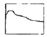
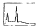
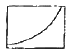
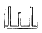

인쇄기사 (2014-05-25 기출문제)
1과목: 인쇄공학
1. 컬러 인쇄물을 만들기 위해 황색 잉크 위에 적색 잉크로 중첩 인쇄를 할 경우, 황색 잉크 농도는 0.02(D), 적색 잉크 농도는 0.01(D), 중첩된 부분의 잉크 농도는 0.025(D)이었다면 트레핑(Trapping) 효율은 몇 % 인가?
- 100%
- 75%
- 50%
- 25%
(정답률: 알수없음)

2. Wet-o-wet의 평판인쇄에서 dot gain의 발생에 영향을 가장 적게 미치는 것은?
- 실린더의 직경
- 베어러와 베어러의 압력
- 잉크롤러 및 습수롤러의 직경
- 기어의 숫자, 품질, 이빨의 가공과 모양 등
(정답률: 알수없음)
3. 종이의 물성 중 잉크의 수리성에 영향을 미치는 것이 아닌 것은?
- 평활성
- 거칠음도
- 투기도
- 백색도
(정답률: 알수없음)
4. 표면 가공의 기능과 목적으로 볼 수 없는 것은?
- 인쇄물의 보존성을 향상시킨다.
- 인쇄물에 광택을 낸다.
- 원가 절감의 효과가 있다.
- 잉크의 퇴색을 방지한다.
(정답률: 알수없음)
5. 인쇄된 용지를 중첩하여 쌓으면 완전히 건조되지 않는 잉크가 다른 용지의 이면으로 부착되는 인쇄 사고는?
- 초킹(chalking)
- 블로킹(blocking)
- 프로큐레이션(procuration)
- 뒤묻음(set-off)
(정답률: 알수없음)
6. 인쇄면에 도넛 모양의 작은 흰테 얼룩으로 인쇄판에 이물질이 붙어서 일어나는 현상은?
- 트래핑
- 히키
- 스커밍
- 블라인딩
(정답률: 알수없음)
7. 잉크의 전이 현상을 정량적으로 측정하는 방법이라고 볼 수 없는 것은?
- 인쇄 전과 후의 인쇄판의 중량을 측정
- 색상 대비를 통한 비색 분석을 이용한 방법
- 방사성 동위 원소에 의한 가이어 계수의 사용
- 잉크 공급 롤러의 무게를 측정
(정답률: 알수없음)
8. 점탄성 모델 중 스프링(Spring)과 대시포트(Dashpot)를 병렬로 연결한 모델은?
- Newtonian
- Maxwell
- Hookean
- Voigt
(정답률: 알수없음)
9. 인쇄실의 환경의 작업 효율에 영향을 주는 요소 중 기본적인 요소에 해당하지 않는 것은?
- 온·습도의 영향
- 공기의 청정
- 작업자의 심리
- 환경의 정리
(정답률: 알수없음)
10. 마젠타 잉크의 각 필터에 대한 색 농도 값이 다음과 같을 때, 회색도는 얼마인가? (단, B필터 : 0.35, G필터 : 0.80, R필터 : 0.09 이다.)
- 25.71%
- 20.00%
- 11.25%
- 43.75%
(정답률: 알수없음)
11. 다음 중 불쾌지수를 구하는 식으로 옳은 것은?
- (포화온도 + 절대온도) × 0.72 + 40.6
- (포화온도 + 절대습도) × 0.72 + 40.6
- (섭씨온도 + 절대온도) × 0.72 + 40.6
- (건구표시온도 + 습구표시온도) × 0.72 + 40.6
(정답률: 알수없음)
12. 기체, 액체, 고체의 삼상이 접하는 지점에서 힘의 평형을 이루면 접촉각이 발생하는데, 다음 중 접촉각이 몇도 일 때 가장 잘 젖는다고 할 수 있는가?
- 0도
- 45도
- 90도
- 135도
(정답률: 알수없음)
13. 다음 중 변색 및 퇴색(discoloration and fading)의 주요 요인과 가장 거리가 먼 것은?
- 빛(햇빛, UV 램프)
- 열(상온 이상의 고열)
- 화학물질(유기용제, 산, 알칼리)
- 밀폐된 장소의 보관
(정답률: 알수없음)
14. 제책의 종류 중 내지를 철사를 꿰매고 책등에 풀칠하여 굳힌 다음 표지를 씌우고 함께 다듬 재단하는 방법은?
- 양장
- 반양장
- 호부장
- 중철
(정답률: 알수없음)
15. 인쇄 잉크의 레오노지(Rheology)를 가장 적절하게 표현한 것은?
- 인쇄 잉크의 흡유성
- 인쇄 잉크의 색상성
- 인쇄 잉크의 변퇴색
- 인쇄 잉크의 유동 특성
(정답률: 알수없음)
16. 겨울철 저온에서 인쇄실의 습도가 30% 이내로 낮아질 때 가장 먼저 예측되는 인쇄물의 불량 현상은?
- 망점의 찌그러짐(distortion)
- 잉크와 습수의 섞임(emulsion)
- 건조의 지연(slow drying)
- 정전기의 발생
(정답률: 알수없음)
17. 속장과 표지를 따로 가공하여 제책하는 방식으로서 실로 맨 속장을 다듬 재단한 다음, 표지를 싸서 만드는 것으로 표지를 속장보다 조금 크게 만들어 약간 튀어 나오게 한 것이 특징인 제책 방식은?
- 양장 제책
- 반양장 제책
- 호부장 제책
- 무선철 제책
(정답률: 알수없음)
18. 다음 중 풍부한 계조와 색상을 재현하지만 판의 수정이 어려운 인쇄 방법은?
- 플렉소그래피 인쇄
- 스크린 인쇄
- 평판 인쇄
- 그라비어 인쇄
(정답률: 알수없음)
19. 물체에 외부의 힘을 가하면 변형되고, 힘을 제거하면 원상태로 되는 성질은?
- 요변성
- 탄성
- 점성
- 소성
(정답률: 알수없음)
20. 순수한 물의 표면 장력은 몇 dyne/cm 인가?
- 20.3
- 27.2
- 37.2
- 72.8
(정답률: 알수없음)
2과목: 인쇄재료학
21. 다음 중 백색 안료의 성분이 아닌 것은?
- 산화티탄(TiO2)
- 침강성 황산바륨(BaSO4)
- 산화아연(ZnO)
- 황화카드뮴(CdS)
(정답률: 알수없음)
22. 다음 중 침투건조형 잉크가 적용되어야 하는 원고가 어떤 것인가?
- 교과서
- 월간 패션지
- 경제신문
- 가, 나, 다 모두
(정답률: 알수없음)
23. 오프셋 인쇄 기계에 사용되는 블랭킷(blanket)이 갖추어야 할 조건으로 옳지 않은 것은?
- 내유성이 우수해야 한다.
- 수분의 전이성이 좋아야 한다.
- 탄성 복원율이 좋아야 한다.
- 세정성이 좋아야 한다.
(정답률: 알수없음)
24. 평판인쇄에서 얇은 종이 급지시 잼(jam)의 발생 확률이 높은데, 이는 종이 특성 중 어느 것이 부족하기 때문인가?
- Smoothness
- Stiffness
- Two-sideness
- Formation
(정답률: 알수없음)
25. 잉크에 첨가되어 성능을 개선하여 주는 컴파운드(compound)의 특징을 설명한 것은?
- 잉크의 텍을 낮춘다.
- 잉크의 광택을 올린다.
- 잉크의 건조를 향상시킨다.
- 잉크의 색상을 밝게 한다.
(정답률: 알수없음)
26. 다음 중 습수액의 관리 항목으로 맞는 것은?
- 전도도와 pH
- pH와 점도
- Tack과 점도
- 전도도와 tack
(정답률: 알수없음)
27. 백상지에 인쇄 시 픽킹(picking)이 많이 발생하였다. 종이 제조 시에 취할 행동 중 맞는 것은?
- 로진으로 표면을 사이징시킨다.
- 전분, CMC로 표면·건조지력을 향상시킨다.
- 클레이나 탄산칼슘을 많이 넣는다.
- PAM 등의 보류 향상제를 넣는다.
(정답률: 알수없음)
28. 블랭킷 불량 중 밀림의 현상을 설명하는 것이 아닌 것은?
- 블랭킷과 압통 사이의 인쇄압이 적합하지 않다.
- 잉크 비이클의 진상이 남아있다.
- 블랭킷의 장력이 약하다.
- 블랭킷이 팽윤하여 오목·볼록하다.
(정답률: 알수없음)
29. 수종에 따른 화학펄프의 특성을 가장 잘 설명한 것은?
- 침엽수재는 결정이 많아 펄프화가 힘들다.
- 활엽수재 펄프는 섬유길이가 길어 종이 강도가 증가한다.
- 침엽수재는 도관이 많아 인쇄적성이 떨어진다.
- 수지분과 심재율이 높고 딱딱한 수종은 아황상펄프화가 곤란하다.
(정답률: 알수없음)
30. 인쇄잉크를 제조할 때 황색 안료로 사용이 가능한 것은?
- 수산화알루미늄
- 황산바륨
- 황연
- 산화티탄
(정답률: 알수없음)
31. 다음 중 화학 펄프의 장점이 아닌 것은?
- 공해가 적어 환경 친화적이다.
- 섬유의 손상이 없다.
- 불투명도가 떨어진다.
- 미표백 펄프는 강도가 높다.
(정답률: 알수없음)
32. 펄프의 고해를 진생시킬수록 급속도로 감소하는 종이의 강도적 성질은 무엇인가?
- 인열강도
- 인장강도
- 파열강도
- 밀도
(정답률: 알수없음)
33. 종이에 투명한 글자나 모양(water mark)을 삽입하려면 다음 제지 공정 중 어느 공정에서 시도해야 하는가?
- 건조부(dryer)
- 초지부(wire)
- 광택부(calender)
- 재단부(slitter)
(정답률: 알수없음)
34. 1g의 유지 중에 함유된 유리 지방산을 중화하는데 필요로 하는 KOH의 mg 수를 무엇이라고 하는가?
- 겔화가
- 비누화가
- 요오드가
- 산가
(정답률: 알수없음)
35. 광의 굴절률이 가장 크기 때문에 은폐력이 뛰어난 백색잉크에 사용 되는 무기 안료는?
- 탄산칼슘
- 카본블랙
- 티탄백
- 알루미늄화이트
(정답률: 알수없음)
36. 다음 중 액정잉크의 설명 중 틀린 것은?
- 여러 가지 무늬의 인쇄가 가능하다.
- 오염은 적으나 보존기간이 짧다.
- 접착력이 좋다.
- 잉크의 동결을 방지하기 위해 45도 이하를 유지한다.
(정답률: 알수없음)
37. 오프셋 인쇄기의 블랭킷통 세척 시 톨루엔과 같은 방향족 용제를 사용할 때 고려할 사항 중 틀린 것은?
- 팽윤(swelling)이 발생하여 표면구조가 변한다.
- 블랭킷의 경화에 의해 인쇄품질이 좋아진다.
- 작업환경이 나빠져 환겨업의 영향을 받는다.
- 종이에 전이하는 잉크전이율이 변한다.
(정답률: 알수없음)
38. 다음 중 압축성 블랭킷에 대한 설명으로 틀린 것은?
- W. R. Grace에 의해 특허가 출원되엇다.
- 패킹 게이지(Packing Gauge)로 압축성을 측정한다.
- 고무에 특정 물질을 넣어 가교(가황)시킨 후 용매로 용출하여 만든다.
- 압축에 의해 레지스터(Register)가 양호하다.
(정답률: 알수없음)
39. 석유계 용제가 많이 사용되는 평판인쇄에서 내유성 고무롤러의 재료로 사용하지 않는 것은?
- 니트릴 고무
- 아라비아 고무
- 클로로프렌 고무
- 우레탄 고무
(정답률: 알수없음)
40. 다음 중 잉크 용제의 시험에 관련이 있는 것은?
- 비누화값(saponification value)
- 아닐린점(aniline point)
- 요오드값(iodine value)
- 내용제성
(정답률: 알수없음)
3과목: 특수인쇄학
41. 수표나 어음 등에 자기잉크를 이용한 비즈니스 폼 인쇄에 사용되는 용지는?
- OCR
- OMR
- MICR
- OTR
(정답률: 알수없음)
42. 금속도료에 사용되는 잉크의 주성분은?
- Poly Ester Resin
- PVC Resin
- Alkyd Resin
- Acrylic Resin
(정답률: 알수없음)
43. 1개 또는 4개의 분사구에서 잉크를 컴퓨터 제어로 단속적으로 뿜어내어 대상물의 표면에 압력을 주거나 접촉을 하지 않고 화상을 형성시키는 인쇄 방식은?
- 정전스크린 인쇄
- 정전평판 인쇄
- 잉크제트 인쇄
- 전자사진식 인쇄
(정답률: 알수없음)
44. 라미네이트 튜브 인쇄법 중 소재를 구성하는 필름에 미리 그라비어 방식으로 인쇄하며, 후 라미네이트하여 원단을 마무리하는 방식은?
- 라이트 프린팅법
- 포스트 프린팅법
- 애프터 프린팅법
- 프리 프린팅법
(정답률: 알수없음)
45. 유리인쇄 잉크 중에서 무기안료와 유리분말에 왁스를 섞은 고형상의 잉크 종류는?
- 유리 컬러잉크
- 귀금속 컬러잉크
- 페이스트 컬러잉크
- 핫 컬러잉크
(정답률: 알수없음)
46. UV건조기에서 발생하는 가스의 주성분은?
- CO2
- CO
- N2
- O3
(정답률: 90%)
47. 폴리아미드 망사를 사용한 스크린 판에 감광액을 도포하기 전에 핀홀(pinhole)이나 감광액의 부착력을 좋게 하기 위한 올바른 처리 방법은?
- 메타크레졸 1과 에탄올 10을 혼합한 액으로 닦아낸다.
- 비누나 강산성 세척제를 스크린 판에 분사한다.
- 질산과 물을 1:9를 혼합한 정면액에 1분간 담가둔다.
- 40% 빙초산액과 에틸알코올을 1:1로 혼합하여 1분간 담가둔다.
(정답률: 알수없음)
48. 두꺼운 종이에 그라비어 인쇄할 때 필요한 인쇄압(t/m2)은?
- 0.1~0.5
- 0.5~1.0
- 1.0~1.5
- 2.0~3.0
(정답률: 알수없음)
49. 망사의 장력이 일정치 않을 시 발생할 수 있는 문제점을 기술한 것으로 틀린 것은?
- 특히 다색 인쇄 시 인쇄맞춤에 문제가 발생한다.
- 대형 스크린인 경우 망사가 인쇄면에 닿거나 이미지의 변화가 발생하여 인쇄속도가 떨어진다.
- 잉크내림이 일정하지 않게 된다.
- 이격거리(off contact)가 특히 작아지게 된다.
(정답률: 알수없음)
50. 액정 인쇄는 액체와 결정(고체)의 양쪽 성질을 가진 액정의 변화를 이용한 것이다. 액정의 색을 변화시키는 요인은?
- 온도
- 습도
- pH
- 밀집도
(정답률: 알수없음)
51. 석유계 용제의 일반적인 특성이 아닌 것은?
- 친수성을 가진다.
- 비극성 화합물이다.
- 인화점이 낮다.
- 극성물질을 녹이지 않는다.
(정답률: 알수없음)
52. 철판류(금속) 인쇄에서 철판에 필요한 도장 전 가공 사항이 아닌 것은?
- 탈지
- 중화
- 가열
- 탈막
(정답률: 알수없음)
53. 그라비어의 대표적인 제판법에 해당되지 않는 것은?
- 온디멘드 법
- 컨벤셔널그라비어 제판법
- 헬로오클리쇼그래프접
- 레이저 그라비어 시스템 법
(정답률: 알수없음)
54. 플렉소 인쇄에서 에스테르류의 용제에 가장 강한 내성을 갖는 판재는?
- 천연고무(NR)
- 합성고무(NBR)
- 부틸고무(IIR)
- 감광성수지판
(정답률: 알수없음)
55. 콜레스테릭 액정의 나선은 몇 층이 1회전에 해당되는가?
- 500층
- 1000층
- 1500층
- 2000층
(정답률: 알수없음)
56. 주사기에 물을 넣어 피스톤으로 물방울을 뿜어내는 방식과 같은 원리를 이용하여 화상을 형성시켜 종이 등에 인쇄하는 방식은?
- 잉크 제트 인쇄
- 정전 인쇄
- 스크린 인쇄
- 평판 인쇄
(정답률: 알수없음)
57. EB(전자선 경화잉크)의 특징이 아닌 것은?
- 휘발성용제가 많이 포함되어 있는 잉크를 사용한다.
- 제어네지로 경화된다.
- 경화장치가 대형이다.
- 중합개시제가 필요없다.
(정답률: 알수없음)
58. 플렉소 인쇄에 있어서 수성잉크를 많이 사용하는 이유가 아닌 것은?
- 화재 안정성
- 위생성
- 인쇄물의 잔류 용재량 저하
- 접착성
(정답률: 알수없음)
59. 플렉소인쇄(flexography)에 대한 설명으로 틀린 것은?
- 유동성이 풍부한 속건성 잉크를 사용한다.
- 복제판을 비교적 간단히 만들 수 있다.
- 인쇄기는 주행 방향에 따라 스톡형, 드럼형, 인라인형으로 나뉜다.
- 잉크 농도가 풍부한 오목판 인쇄 방법이다.
(정답률: 알수없음)
60. 그라비어 인쇄부(유니트)에 들어 있지 않는 것은?
- 압통 장치
- 잉크 공급 장치
- 두루마리 장치
- 건조 장치
(정답률: 알수없음)
4과목: 인쇄색채학
61. 불투명도(OPACITY)에 관한 ISO규격의 설명으로 틀린 것은?
- 2도 시야 표준광에서 C에서 측정한다.
- 반드시 흑색면을 뒤에 대고 측정한 값으로만 인정된다.
- 주로 종이와 펄프에 해당된다.
- 측정하는 측정시경은 30mm 이상이어야 한다.
(정답률: 알수없음)
62. 국제조명위원회(CIE)에서 가법혼색의 원리에 의해 심리-물리적인 빛의 혼색실험에 기초한 색의 표시방법을 무엇이라 하는가?
- 색좌표도
- 색채코드
- x, y색도도
- 표준표색계
(정답률: 알수없음)
63. 인쇄물의 색에 영향을 주는 종이의 요소로는 광택과 침투성이 알려져 있는데, 종이의 표면 효율에 해당하는 것은?
- (100 – 침투도 – 광택)/2
- (100 – 침투도 + 광택)/2
- (100 + 침투도 + 광택)/2
- (100 + 침투도 – 광택)/2
(정답률: 알수없음)
64. 특정한 조명 및 관측조건에서의 물체 표면의 휘도(L)와 산화마그네슘이 표준 백색면의 휘도(LO)와의 비(L/LO)를 무엇이라 하는가?
- 규약반사율
- 시감반사율
- 분광조성
- 분광분포
(정답률: 알수없음)
65. 색온도에 있어서 플랑크 궤적에 관한 설명으로 올바른 것은?
- 완전복사체가 아닌 경우 광원의 색온도는 플랑크 궤적상을 벗어난다.
- 플랑크 궤적상을 벗어나는 경우 색좌표상에서 광원색과 가장 먼 궤적상의 점을 택하여 색온도로 정한다.
- 플랑크 궤적상에서 벗어난 정해진 색온도는 절대색온도라고 한다.
- 완전복사체의 색온도는 상관색온도라고 한다.
(정답률: 알수없음)
66. 그라스안의 법칙(Grassmann's law)에서 3량을 물체색의 3속성과 비교한다면 휘도는 어디에 해당하는가?
- 색상
- 명도
- 채도
- 색입체
(정답률: 알수없음)
67. 푸르킨예(Purkinje) 현상에 대하여 설명한 것 중 옳지 않은 것은?
- 명소시에서 암소시로 옮겨갈 때 물체색의 밝기에 대한 현상이다.
- 명소시에는 단파장에 감도가 좋고, 암소시에는 장파장에 감도가 좋다.
- 이 현상에 의해 암소시에는 적색이 청색보다 더 어두운 색으로 보인다.
- 이러한 현상은 어두운 곳의 식별을 용이하게 하는데 이용된다.
(정답률: 알수없음)
68. 다음 중 CIE 표준 표색계에 대한 설명으로 틀린 것은?
- CIE 표색계는 X Y Z 3자극 값을 기본으로 하고 있다.
- CIE 표색계에서 최대 자극 값으로 구한 색도좌표 x y z의 합은 1이다.
- CIE 표색계에서 Y는 색상을 나타내는 것으로 빨강으로 표기된다.
- CIE 표색계는 보통 x, y에 의한 직각좌표를 취하게 되며, 모든 색은 평면 위의 점들로 나타낼 수 있다.
(정답률: 알수없음)
69. 가시광 파장 영역을 3등분으로 분광하였을 때 시감도가 가장 높은 영역은?
- 단파장 영역
- 중파장 영역
- 장파장 영역
- 단파장 영역과 장파장 영역
(정답률: 알수없음)
70. 몸이 마른 사람이 색채가 갖는 느낌을 이용하여 몸집이 크게 보이도록 하려고 한다. 다음 중 배색이 가장 적절하게 이루어진 것은?
- 회색상의에 노랑하의
- 회색상의에 청색하의
- 회색상의에 파랑하의
- 회색상의에 적색하의
(정답률: 알수없음)
71. Yellow와 Cyan 잉크를 혼합하면 어떤 빛이 제거되는가?
- Red와 Blue
- Green과 Blue
- Red와 Green
- Cyan과 Blue
(정답률: 알수없음)
72. 다음 중 보색관계가 아닌 것은?
- 황(Yellow) - 청자(Blue)
- 청(Cyan) - 적(Red)
- 황(Yellow) - 녹(Green)
- 적자(Magenta) – 녹(Green)
(정답률: 알수없음)
73. 다음 중 크로마틱네스(chromaticness)와 가장 관계가 있는 색의 속성은?
- 색상과 채도
- 명도와 채도
- 색상과 명도
- 색상, 명도, 채도
(정답률: 알수없음)
74. 색의 대비(對比)중 잔상은 무슨 대비에 속하는가?
- 동시대비(同時對比)
- 계시대비(繼時對比)
- 경계대비(境界對比)
- 연변대비(緣邊對比)
(정답률: 알수없음)
75. 같은 밝기 내에서 회색으로부터 얼마나 떨어져 있는지를 나타내는 색의 속성은 무엇인가?
- 색상
- 명도
- 채도
- 휘도
(정답률: 알수없음)
76. 다음 중 주목성이 가장 높은 색은?
- 찬색 계통, 고채도의 색
- 따뜻한 색 계통, 저채도의 색
- 찬색 계통, 저채도의 색
- 따뜻한 색 계통, 고채도의 색
(정답률: 알수없음)
77. 오스트발트 표색계의 등순계열 조화로 배열된 것은?
- ia – ie- i
- c – gc - ic
- ec – ic - nc
- ia – ne – pg
(정답률: 알수없음)
78. 다음 중 포화도(Saturation)에 대한 설명으로 옳은 것은?
- 색상을 밝기로 나눈 것
- 채도를 밝기로 나눈 것
- 채도가 가장 높은 색을 나타내는 것
- 무채색의 포함량을 수치화한 것
(정답률: 알수없음)
79. 오스트발트 표색계에 대한 설명으로 틀린 것은?
- 색입체 중에 포함되어 있는 유채색은 색상기호-백색량-흑색량의 순서로 표시된다.
- 흑색도는 색에 포함된 흑색량을 말한다.
- 순색도는 먼셀의 채도와 개념이 다르다.
- 색상의 배열은 40색 기준이다.
(정답률: 알수없음)
80. 다음 그림 중 형광등의 스펙트럼 분포와 가장 가까운 것은?




(정답률: 알수없음)
5과목: 인쇄작업론 및 품질관리
81. 입체사진 인쇄로 그림엽서, 카드, 디스 플레이, 카탈로그, 패키지 등에 인쇄되는 인쇄는?
- 스테레오 인쇄
- 패드 인쇄
- 앰풀 인쇄
- 라벨 인쇄
(정답률: 알수없음)
82. 오프셋 윤전기에서 열풍 건조 장치의 풍속은?
- 10m/s
- 20m/s
- 30-60m/s
- 80m/s
(정답률: 알수없음)
83. 다음 중 오프셋 매엽기와 비교하여 윤전기의 장점을 잘못 설명한 것은?
- 인쇄 속도가 빠르다.
- 용지 비용이 싸다.
- 대량 생산에 적합하다.
- 두꺼운 종이의 인쇄가 쉽다.
(정답률: 알수없음)
84. 스크린 인쇄의 특징이라고 볼 수 없는 것은?
- 인쇄 소재가 다양하며, 인쇄압으로 부서지기 쉬운 소재에도 인쇄가 가능하다.
- 판면이 유연하여 평면 또는 곡면에도 인쇄가 가능하다.
- 적은 양의 인쇄가 가능하나 많은 양의 인쇄는 불가능하다.
- 치수가 쿤 판도 제판 할 수 있다.
(정답률: 알수없음)
85. 스크린 인쇄기의 피인쇄체에 따른 분류 방법이 아닌 것은?
- 평압 인쇄기
- 평면 인쇄기
- 곡면 인쇄기
- 두루마리 정전 스크린 인쇄기
(정답률: 알수없음)
86. 그라비어인쇄의 장점이 아닌 것은?
- 종이 인쇄의 출판물과 상업인쇄물, 렛텔이나 연포장에 사용되는 특수인쇄까지 응용범위가 넓다.
- 그라비어 인쇄는 여러 가지 피인쇄물체 즉 종이, 셀로판, 염화비닐, 금속박 등의 물질에 인쇄가 가능하다.
- 그라비어 인쇄는 연속계조의 범위는 좁지만 다양한 피인쇄물체에 인쇄가 가능하다.
- 3색 또는 4색에 의한 컬러 그라비어에서는 다른 판식에 비해 적은 색수로 천연색의 재현에 뛰어난 색채효과와 확실한 화상을 얻을 수 있다.
(정답률: 알수없음)
87. 원압 인쇄기 구조에서 판면을 왕복시키는 운동과 관계가 먼 것은?
- 크랭크 운동(Crank motion)
- 봉진 운동(Ballistic motion)
- 맹글 운동(Mangle motion)
- 핸들 운동(Handle motion)
(정답률: 알수없음)
88. 레버식 수동 스크린 인쇄기에 대한 설명 중 옳지 않은 것은?
- 한 사람의 작업자가 다양한 크기의 화상을 스크린 인쇄 할 수 있다.
- 종이의 급지와 배지는 수동이지만 화상의 전사는 자동으로 이루어진다.
- 레버의 작용으로 스텐슬(stencil) 전체에 걸쳐서 균일한 압력이 가해진다.
- 스퀴지(squeegee)는 스프링의 작용으로 자동적으로 들어올려져서 스크린과의 접촉 상태에서 분리된다.
(정답률: 알수없음)
89. 인쇄 공정을 순서대로 바르게 표시한 것은?
- 원고준비-제판 및 교정인쇄-시험인쇄-본인쇄-제책
- 원고준비-시험인쇄-제판 및 교정인쇄-본인쇄-제책
- 원고준비-제판 및 교정인쇄-제책-시험인쇄-본인쇄
- 원고준비-시험인쇄-제책-제판 및 교정인쇄-본인쇄
(정답률: 알수없음)
90. 평판 오프셋 인쇄기의 급지 방식 중 스트림 피더방식에서 종이의 양단을 컨베이어로 떠오르게 하여 종이를 보내는 방식은?
- 사이드 세퍼레이트(Side Separate) 식
- 센터 세퍼레이트(Center Separate) 식
- 프레셔 클램프(Pressure Clamp) 식
- 공기 추스르개(air blast nozzle) 식
(정답률: 알수없음)
91. 오프셋 윤전기에서 두루마리 종이의 표면 온도를 낮추어 품질을 안정시키고, 두루마리 종이의 장력을 조정하는 역할을 하는 장치는?
- 급지 장치
- 축임물 장치
- 냉각 장치(Chill Roll)
- 가늠맞춤 장치
(정답률: 알수없음)
92. 그라비어 인쇄기에서 일반적인 독터의 각도는?
- 20~30도
- 30~45도
- 70~80도
- 85~90도
(정답률: 알수없음)
93. 다색 오프셋 윤전기 종류가 아닌 것은?
- B-B형 오프셋 윤전기
- 2색 오프셋 윤전기
- 3색 오프셋 윤전기
- 4색 오프셋 윤전기 또는 B-S형 오프셋 윤전기
(정답률: 알수없음)
94. 인쇄물의 화선이 매우 부드러워 박력이 부족하고, 내쇄력이 비교적 약한 인쇄는?
- 볼록판 인쇄
- 오목판 인쇄
- 평판 인쇄
- 그라비어 인쇄
(정답률: 알수없음)
95. 블랭킷 대향형(blanket-to-blanket type) 오프셋 매엽기에 대한 설명 중 틀린 것은?
- 양면 인쇄가 용이하다.
- 압통이 필요 없다.
- 블랭킷통의 한 쪽에 그리퍼(gripper)가 설치되어 있다.
- 편면 인쇄가 어렵다.
(정답률: 알수없음)
96. 인쇄판의 형식과 인쇄기의 종류가 바르게 짝지워지지 않은 것은?
- 볼록판 – 플렉소(flexographic) 인쇄기
- 평판 – 오프셋(off-set) 인쇄기
- 오목판 – 그라비어(gravure) 인쇄기
- 공판 – 비즈니스폼(business form) 인쇄기
(정답률: 알수없음)
97. 오프셋 윤전기에 비교한 매엽기용 인쇄 실린더의 특징을 바르게 설명한 것은?
- 실린더 베어러(bearer)의 폭이 좁다.
- 판 클램프(clamp)가 필요 없다.
- 실린더 갭(gap)의 폭이 넓다.
- 판통의 언더컷(undercut)이 크다.
(정답률: 알수없음)
98. 인쇄물에 나타나는 기어 줄무늬(gear streaks)의 발생원인과 관련이 가장 적은 것은?
- 인쇄압력의 과다
- 실린더 갭(gap)의 과소
- 실린더 구동 기어의 마모
- 베어러(bearer)의 접촉 불량
(정답률: 알수없음)
99. 오프셋 인쇄기를 주로 사용하는 인쇄 방식은?
- 볼록판 인쇄
- 평판 인쇄
- 오목판 인쇄
- 공판 인쇄
(정답률: 알수없음)
100. 겹인쇄(Doubling) 방지를 위해 사전에 점검해야 할 사항으로 맞지 않는 것은?
- 그리퍼의 압을 조정하고, 세기를 각기 다르게 한다.
- 물림 여백은 모두 같게 한다.
- 양단 끝의 그리퍼에 지나친 압을 주지 말아야 한다.
- 그리퍼의 위치가 각 유닛과 전부 같아야 한다.
(정답률: 알수없음)